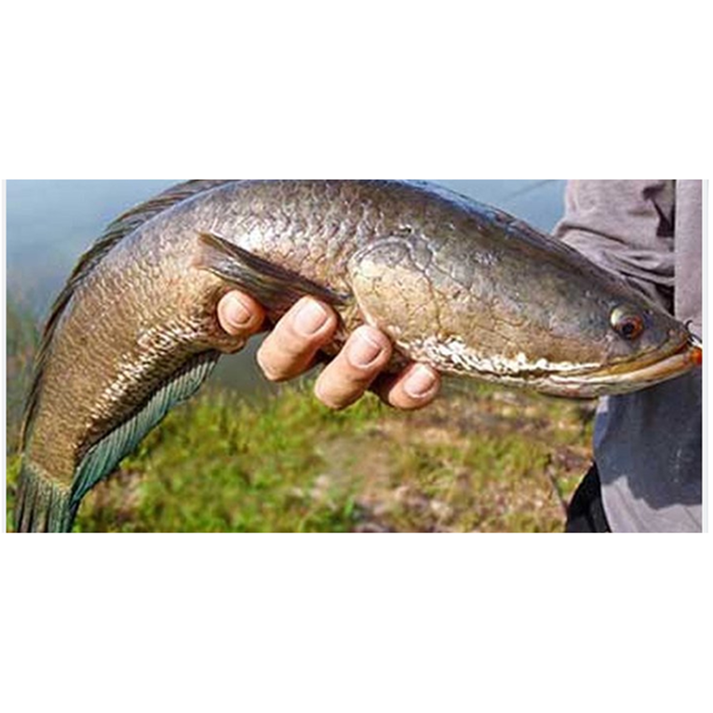

Ikan Gabus
Ikan gabus adalah salah satu jenis ikan air tawar yang bersifat karnivora (pemakan daging) yang banyak terdapat diperairan Asia Tenggara. Ikan air tawar yang memiliki nama ilmiah (Channa striata) ini belum banyak diketahui tentang sejarah dan sifat biologisnya. Anakan ikan gabus memiliki peampilan yang eksotis sehingga bayak dipelihara di aquarium sebagai ikan hias. Sedangkan ikan gabus dewasa dikenal sebagai ikan konsumsi yang bernilai ekonomi tinggi dan banyak disukai masyarakat Indonesia. Ikan gabus biasanya dijual dalam keadaan segar maupun ikan olahan.
Di Indonesia, ikan gabus dikenal dengan berbagai nama daerah (nama lokal), diantaranya yaitu kutuk, gabus (Jawa), kocolan (Betawi), haruan, aruan (Banjarmasin, Bajnarnegara), bayong, licingan (Banyumas), bogo (Sidoarjo), rajong (Sunda), deluk, kuto (Jawa, Madura), spunkat (Palembang), bace (Aceh), bado (Gaju). Di Malaysia, ikan gabus dikenal dengan nama aruan, haruan, gabus.
Kandungan Ikan Gabus (dalam 100 gram)
| Protein (g) | Kalori (Kal) | Lemak (g) | Besi (mg) | Kalsium (mg) | Fosfor (mg) | Vit A (SI) | Vit B1 (mg) | Air (gr) | BDD (%) |
|---|---|---|---|---|---|---|---|---|---|
| 25,2 | 69 | 1,7 | 0,9 | 62 | 176 | 150 | 0,04 | 69 | 64 |
Manfaat Ikan Gabus
- Pembentukan dan pertumbuhan otot
- Mempercepat penyembuhan luka
- Menjaga keseimbangan cairan dalam tubuh
- Memperbaiki gizi buruk
- Sehat untuk pencernaan
Ikan gabus mengandung kandungan protein yang lebih tinggi dibanding kadar protein yang terdapat pada ikan lele maupun pada ikan mas atau nila. Dari 100 gram ikan gabus Anda dapat memperolah 25,2 gram protein. Coba Anda bandingkan dengan kadar protein untuk per 100 gramnya yang terdapat pada ayam yang hanya 18,2 gram, pada daging sapi hanya 18,8 gram, maupun telur yang hanya 12,8 gram. Kandungan protein yang tinggi akan menguntungkan Anda sebab akan banyak membantu dalam proses pembentukan otot pada tubuh Anda.
Daging ikan gabus banyak mengandung kadar albumin yang sangat tinggi. Perlu Anda ketahui, albumin adalah salah satu jenis protein yang sangat penting dalam proses penyembuhan luka pada tubuh Anda.
Zat albumin juga berfungsi untuk menjaga keseimbangan cairan dalam tubuh. Jika kondisi cairan dalam tubuh Anda berkurang, maka protein yang masuk ke dalam tubuh akan pecah sehingga tidak dapat berfungsi secara normal. Kandungan normal albumin dalam tubuh mencapai 60%.
Manfaat ikan gabus juga dapat memperbaiki gizi buruk yang banyak dialami oleh bayi, balita, anak maupun ibu hamil. Dalam 100 gr gabus saja, sudah sangat cukup memenuhi berbagai kebutuhan gizi yang sangat penting untuk kesehatan terutama untuk bayi.
Ikan gabus mempunyai struktur daging yang lebih empuk, sehingga Anda tidak perlu mengkhawatirkan pencernaan. Hal ini karena ikan gabus memiliki protein kolagen yang lebih rendah dibanding kadar protein yang terkandung pada daging. Ikan gabus hanya memiliki 3% hingga 5% dari total kandungan protein kolagen.